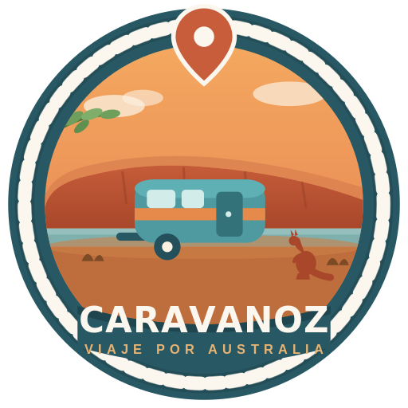
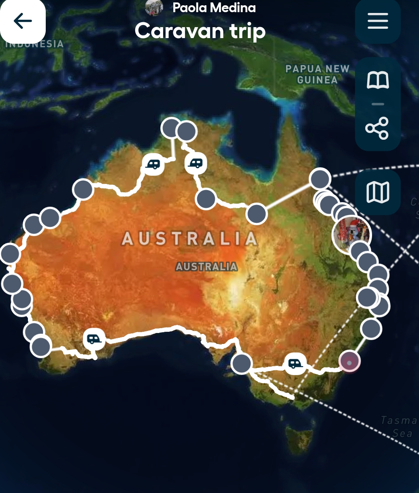

19:50
Vida Nómada · 1 Año en Queensland
Tips, rutas y la realidad de vivir viajando en caravana desde 2023. Una comunidad para hispanohablantes que sueñan con largarse al camino.
Acompañanos en cada kilómetro. Episodios nuevos del canal de YouTube, directo desde la caravana.
Charlas largas y sin filtro sobre la vida en la ruta, decisiones difíciles y todo lo que no entra en un video. Llevanos en tus auriculares a donde vayas.

Reproductor interactivo real · Seleccioná Cielo de Sal para reproducir audio real.
Guías prácticas paso a paso y crónicas de primera mano. La mezcla que nos hubiera gustado encontrar antes de arrancar.
Te acompañamos antes de salir y durante tus kilómetros por Australia. Respuestas reales a dudas reales de trámites, compra de vehículos y trabajo en ruta.
Despejá la incertidumbre y arrancá sin estrés. Una sesión de preguntas y respuestas a medida para desenredar la burocracia australiana y entender la logística real del viaje.
Evitá comprar a ciegas o caer en estafas. Analizamos tu presupuesto y estilo de viaje para sugerirte el vehículo exacto que necesitás antes de invertir tus ahorros.
Viajar por Australia con animales tiene sus reglas. Te armamos la logística para que tu perro, gato o ave viaje seguro y sepas exactamente dónde son bienvenidos.
Capturas reales de los kilómetros recorridos. Momentos sencillos que hacen que todo el camino valga la pena.
Somos dos argentinos que en 2023 decidimos dejar la oficina, comprar una caravana y largarnos a recorrer Australia sin fecha de vuelta. Lo que empezó como una aventura se convirtió en nuestro estilo de vida.
Hoy combinamos el trabajo remoto con la vida en la ruta, y compartimos cada parte del camino —lo lindo y lo difícil— para inspirar a otros hispanohablantes a animarse a vivir distinto. Esta comunidad es nuestro fogón virtual.
Miles de kilómetros, cientos de historias y 7 estados recorridos. Así fue nuestro camino desde el primer día que salimos a la ruta.
